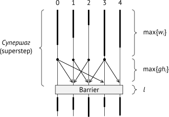
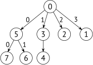
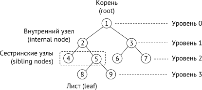
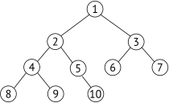
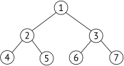
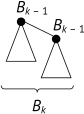
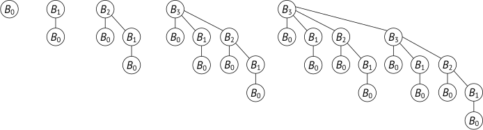

The CollBook
This work is licensed under a Creative Commons Attribution 4.0 International License (CC BY 4.0). This means you are free to share, copy, redistribute, and modify this book under the following terms:
-
Attribution: Credit must be given to the original authors and contributors.
-
No Additional Restrictions: You cannot impose legal restrictions that prevent others from using the book freely under the same terms.
Free Digital Version Available. This book is freely available online at https://github.com/happi/theBeamBook/ under the Creative Commons license.
For more information on the Creative Commons license, visit: https://creativecommons.org/licenses/by/4.0/.
Printed edition: Курносов М.Г. Алгоритмы коллективных операций стандарта MPI. - Москва: Горячая Линия - Телеком, 2025. - 288 с. ISBN 978-5-9912-1149-9.
© 2025 Mikhail Kurnosov.
Предисловие
Стандарт MPI (Message Passing Interface) и библиотеки реализующие его остаются на протяжении нескольких десятков лет основным средством разработки параллельных программ для высокопроизводительных вычислительных систем с распределенной памятью. Значительное место в стандарте занимает описание коллективных коммуникационных операций, или групповых, глобальных, в которых участвуют все или часть процессов программы. Время их выполнения для многих приложений является критически важным.
Монография, которую вы читаете, – это попытка автора систематизировать и изложить наиболее значимые алгоритмы коллективных операций MPI. Большая часть книги посвящена алгоритмам, которые не учитывают архитектурных свойств вычислительных систем, а опираются лишь на пару двусторонних примитивов передачи Send и приема Recv сообщений. Такие алгоритмы формируют базис для построения более сложных архитектурно-ориентированных методов коллективных операций, построения высокопроизводительных коммуникационных сетей со специализированными топологиями и протоколами канального уровня. Актуальность этих алгоритмов не угасает, с каждым витком развития архитектуры вычислительных систем происходит возврат к базовым алгоритмам и их реализация с учетом текущего уровня развития коммуникационных и процессорных технологий.
Отражены основные подходы построения алгоритмов коллективных операций для систем определенных классов: для системы с общей памятью, иерархические алгоритмы для систем с многоуровневой иерархией памяти и коммуникационной сети. Изложена специфика реализации неблокирующих коллективных операций в библиотеках MPI – построение расписаний и продвижение их выполнения. В конце книги затрагивается вопрос экспериментальной оценки эффективности коллективных операций.
Часть монографии составили результаты исследований, выполненных автором в Сибирском государственном университете телекоммуникаций и информатики (г. Новосибирск) и Институте физики полупроводников им. А.В. Ржанова Сибирского отделения РАН. Описанные практические аспекты реализации алгоритмов опираются на опыт участия автора и его аспирантов в международном проекте Open MPI (компоненты coll/base, coll/libnbc), а также некоторые подходы, которые реализованы автором в серии библиотек структурно-ориентированных алгоритмов коллективных операций MPI по заказу компании Huawei.
Материал книги использовался в курсе лекций "Параллельные вычислительные технологии", который автор читал студентам бакалавриата и магистратуры в Сибирском государственном университете телекоммуникаций и информатики.
В своей профессиональной деятельности автору довелось общаться с большим количеством талантливых людей. Автор благодарен своему научному руководителю чл.-корр. РАН В.Г. Хорошевскому, коллегам по Кафедре вычислительных систем Сибирского государственного университета телекоммуникаций и информатики, а также сотрудникам Лаборатории вычислительных систем Института физики полупроводников им. А.В. Ржанова Сибирского отделения РАН.
Глубокую признательность и благодарность автор выражает всем, кто принял участие в обсуждении рукописи монографии: к.т.н. Полякову Артему Юрьевичу (стандарт PMIx, проекты OpenPMIx, Open MPI; NVIDIA), Аненкову Александру Дмитриевичу (YADRO), д.т.н. Шидловскому Станиславу Викторовичу (Томский государственный университет), к.т.н. Кулагину Ивану Ивановичу (Институт системного программирования им. В.П. Иванникова РАН), д.т.н. доценту Павскому Кириллу Валерьевичу (Институт физики полупроводников им. А.В. Ржанова СО РАН), к.т.н. доценту Пазникову Алексею Александровичу (National University of Singapore).
Автор выражает надежду, что возможные неточности и опечатки в тексте не станут непреодолимой преградой для восприятия основных идей. Замечания, предложения и комментарии можно направить по адресу mkurnosov[at]yandex.ru.
С уважением, Михаил Курносов
профессор, доктор технических наук
г. Новосибирск
1. Введение
Как следует из названия, Message Passing Interface (https://www.mpi-forum.org), определяет программный интерфейс библиотек высокопроизводительной передачи сообщений. Включает операции двусторонних обменов (point-to-point), односторонних обменов (one-sided remote memory access) и коллективные операции. Вводит понятия группы процессов, коммуникаторов, виртуальных топологий и производных типов данных. Основное предназначение стандарта – обеспечить возможность создания параллельных программ, переносимых на уровне исходного кода между вычислительными системами различных архитектур и конфигураций: с общей и распределенной памятью, на базе заказного оборудования и свободно доступного на рынке, с процессорами общего назначения и/или специализированными ускорителями.
Изначальная мотивация создания стандарта – сложность переносимости параллельных программ между различными архитектурами вычислительных систем. К 1992 году каждый производитель высокопроизводительных вычислительных систем (Thinking Machines, NEC, Intel, Cray, Fujitsu, Hitachi), как правило, поставлял свою реализацию сред параллельного программирования, которые включали механизмы управления процессами и предоставляли операции двусторонних и коллективных обменов информацией. Можно выделить следующие проекты и программные системы, которые оказали значительное влияние на становление MPI: проект PVM (Parallel Virtual Machine) – открытая библиотека и среда времени выполнения для создания параллельных программ в модели передачи сообщений (двусторонние и ряд коллективных операций, уведомления об отказах), разработка Окриджской национальной лаборатории США (ORNL); проекты p4 (Аргонская национальная лаборатория США, ANL), Intel NX/2, IBM EUI, nCUBE Vertex, Zipcode, PARMACS, Express, Chimp, PICL, Chameleon.
Желание обобщить накопленный опыт и сформировать устойчивый интерфейс для создания параллельных программ привел в 1992 году к возникновению инициативной группы специалистов – MPI Forum, которая включала более 40 организаций и 60 человек. В мае 1994 года была опубликована первая версия стандарта, которая включала блокирующие и неблокирующие функции двусторонних обменов, коллективные операции, управление группами процессов и коммуникаторами, виртуальные топологии и производные типы данных. Эталонная реализация стандарта (reference implementation) вышла в 1996 году – библиотека MPICH. В июле 1997 года закончена работа и опубликован стандарт MPI 2.0, который включал функции односторонних обменов (one-sided communication), динамического порождения процессов, параллельный ввод-вывод (MPI I/O), интерфейсы для C и Fortran 90. Значительные изменения в стандарте произошли в версии MPI 3.0, которая опубликована в сентябре 2012 года. Основные изменения коснулись введения неблокирующих коллективных операций (nonblocking collective operation), разреженных коллективных операций (sparse collectives), расширения возможностей односторонних обменов, удалена поддержка интерфейса для С. В июне 2021 года вышел MPI 4.0, который расширил интерфейс операциями с поддержкой large-count, решающий проблему переполнения знакового типа int для элементов count, коллективные операции с не меняющимися аргументами (persistent collectives), разделенные коммуникационные операции для многопоточных программ (partitioned communications) и модель сессий для инициализации MPI-программ (MPI Session).
Автор считает важным отметим, что в СССР и России велись и ведутся работы по созданию отечественных вычислительных систем с распределенной памятью и систем параллельного программирования для них: вычислительные системы с программируемой структурой (Минск-222, семейство МИКРОС) [1],[2],[3],[4],[5] , семейство систем МВС [6] , вычислительные системы со специализированными топологиями коммуникационных сетей [7],[8], реконфигурируемые вычислительные системы [9] . Автор монографии является членом научной школы по распределенным вычислительным системам с программируемой структурой, основателем которой является чл.-корр. РАН В.Г. Хорошевский. В начале 1960-х годов в Институте математики Сибирского отделения РАН были инициированы работы по созданию вычислительных систем с распределенной памятью на базе серийных ЭВМ. Для их сопряжения в систему были разработаны аппаратные системные устройства, поддерживающий основные типы коммуникационных операций: двусторонние обмены и коллективные операции: трансляционный обмен (one-to-all), коллекторный прием (all-to-one) и трансляционно-циклический обмен типа "каждый-всем" (all-to-all). Заинтересованный читатель может найти дополнительную информацию в следующих работах [1],[2],[3],[5] .
В центре внимание данной книги часть стандарта MPI – алгоритмы коллективных операций обмена информацией. В следующих главах дается краткое изложение основных понятий стандарта, приводится описание моделей для оценки эффективности алгоритмов и начинается систематическое описание алгоритмов.
2. Основные понятия стандарта MPI
Рассмотрим основные понятия стандарта, которые понадобятся нам при рассмотрении алгоритмов коллективных операций.
2.1. Коммуникаторы
После инициализации библиотеки при помощи операций MPI_Init, MPI_Init_thread или механизма сессией MPI_Session_init каждому процессу известен коммуникатор (communicator) из \(p\) процессов. Каждый процесс имеет уникальный номер, ранк (rank), из множества \(\{0, 1, \ldots, p-1\}\). Стандарт предоставляет функции порождения новых коммуникаторов, включая группировку процессов в соответствии с иерархией памяти вычислительных узлов (например, MPI_Comm_split_type). На протяжении всей книги мы будем рассматривать только интра-коммуникаторы, так как интер-коммуникаторы редко применяются на практике.
2.2. Блокирующие операции Send/Recv
Рассмотрим две базовые операции Send и Recv. Операция Send выполняет передачу процессу \(dest\) сообщения с тегом \(tag\). Сообщение для отправки располагается в памяти начиная с адреса \(sbuf\) и состоит из последовательно расположенных \(scount\) элементов типа \(sdtype\).
MPI_Send(sbuf, scount, sdtype, dest, tag, comm)
MPI_Recv(rbuf, rcount, rdtype, source, tag, comm, status)Выполнение процесса-отправителя блокируется в Send до тех пор, пока \(sbuf\) нельзя будет использовать повторно – пока сообщение из \(sbuf\) не будет скопировано библиотекой в служебный буфер или не будет отправлено получателю. Прием сообщений выполняется операцией Recv, которая требует указания адреса \(rbuf\) буфера-приема и способа размещения полученных данных в памяти, который задается параметрами \(rcount\) и \(rdtype\). Типы \(sdtype\) и \(rdtype\) могут не совпадать на стороне отправителя и получателя. Стандарт требует равенства размеров сообщений:
Если процесс передает сообщение производного типа данных с не непрерывно размещенными в памяти элементами базовых типов (non-continuous datatype), то библиотека может выполнять предварительную упаковку сообщения в непрерывный буфер. Аналогично, при получении сообщения имеется непрерывная последовательность, которая разворачивается в \(rbuf\) в соответствии с описанием типа \(rdtype\). В параметре \(status\) сохраняется ранк отправителя, тег и реальный размер принятого сообщения.
Любой производный тип данных MPI рекурсивно строится на основе предопределенных базовых типов (MPI_DOUBLE, MPI_INT и др.). Формально производный тип данных задается картой типа (type map) – последовательностью пар \((type_0, disp_0), (type_1, disp_1), \ldots, (type_{n-1}, disp_{n-1})\), где \(type_i\) – базовый тип, \(disp_i\) – смещение в байтах относительно начала буфера в памяти. Например, мы можем отправить строку матрицы как непрерывную последовательность из 100 элементов MPI_DOUBLE, а на стороне получателя построить производный тип данных и принять операцией Recv 100 элементов в виде столбца матрицы с хранением по строкам (row-major).
Упаковка сообщения для типа с несмежными элементами в памяти (например, столбец матрицы) требует выполнения копирования отдельных блоков в непрерывный буфер. Это является причиной накладных расходов при использовании производных типов. За упаковку в непрерывный буфер отвечает библиотека, но это можно реализовать и на стороне приложения, например циклом копирования элементов или операцией MPI_Pack [10],[11].
2.3. Неблокирующие операции Isend/Irecv
Неблокирующие операции Isend/Irecv позволяют инициировать запрос (request) на выполнение коммуникационной операции. Проверка состояния операции, завершена или выполняется, реализуется операцией Test. Дождаться завершения ассоциированной с запросом операции можно блокирующим вызовом Wait.
MPI_Isend(sbuf, scount, sdtype, dest, tag, comm, request)
MPI_Irecv(rbuf, rcount, rdtype, source, tag, comm, request)
MPI_Test(request, flag, status)
MPI_Wait(request, status)Неблокирующие операции позволяют реализовать в программе совмещение (перекрытие, overlap) коммуникационной операции и вычислений, которые следуют после неблокирующего вызова и не используют буфер операции. Эффективность совмещения зависит от аппаратной конфигурации целевой системы, в какой степени нижележащий коммуникационный слой и/или сетевой адаптер поддерживает аппаратную реализацию коммуникационных операций.
В большинстве реализаций библиотек MPI блокирующие операции двусторонних обменов реализуются на базе неблокирующих. Операция Send реализуется вызовов Isend, за которым сразу следует Wait. За выполнение коммуникационных операций, связанных с запросами, отвечает подсистема продвижения (MPI progress engine) [12] . Библиотека поддерживает в каждом процессе несколько типов очередей запросов [13],[14] . При вызове Isend создается запрос на выполнение неблокирующей коммуникационной операции, он помещается в очередь Send-Request-Queue (SRQ). Аналогично, при вызове Irecv запрос помещается в очередь Recv-Request-Queue (RRQ). Если сообщение достаточно большое и нижележащий коммуникационный уровень (TCP/IP, RoCE, InfiniBand) требует нескольких обращений к своим коммуникационным примитивам, то библиотеке MPI необходимо каким-то образом выполнять эти действия между вызовами Isend/Irecv и Wait. Для этого пользователю предоставляются функции проверки состояния запросов Test, которые запускают часть еще невыполненных коммуникационных шагов, связанных с запросом и возвращает его состояние пользователю. Операция Wait блокируется до тех пор, пока цикл обращений к подсистеме продвижения, не закончит выполнение операции, а запрос не перейдет в состояние завершенный (complete). Описанная схема – это синхронное продвижение коммуникационных операций путем явного вызова пользователем Test. Альтернативный вариант – библиотека для каждого процесса запускает поток, который асинхронного продвигает запросы. В этом случае пользователю не требуется явно вызывать Test для продвижения операций, но за это приходится платить накладными расходами на поддержание дополнительного потока, который будет делить процессорное ядро с потоком пользователя. Библиотеки Open MPI и MPICH по умолчанию собираются в режиме синхронного продвижения запросов, без выделенного потока.
2.4. Поиск поступивших сообщений
При вызове операции Recv/Irecv библиотека запускает процедуру поиска поступивших сообщений (tag matching). Рассмотрим ситуацию, которая объясняет наличие в библиотеках MPI двух типов протоколов для реализации двусторонних обменов, eager и rendezvous [15] . Процесс 0 выполняет передачу сообщения процессу 1. Процесс 1 по какой-то причине выполняет вызов операции Recv намного позже, чем по каналу связи поступило сообщение от процесса 0. Возникает вопрос – в какой буфер библиотека MPI должна сохранить поступившее сообщение процесса 0? Адрес буфера приема \(rbuf\) пользователь сообщить не успел. Очевидное решение – библиотека создает в каждом процессе очередь непредвиденных сообщений Unexpected-Message-Queue (UMQ) из \(n\) буферов фиксированного размера по \(s\) байт. Параметры \(n, s\) являются настраиваемыми, их значение известно в каждом процессе. Логика работы библиотеки для операций Send/Recv разделяется на два случая – сообщения не превышающие \(s\) байт передаются протоколом \(eager\), а сообщения больше \(s\) протоколом \(randezvous\) c предварительным установлением соединения для выделения буфер необходимого размера. Рассмотрим отдельные шаги этих протоколов.
2.4.1. Протокол Eager
Пользователь вызвал Send. Если сообщение не превышает \(s\) байт оно отправляется одной операцией получателю.
Поступление сообщения в процесс. Событие регистрируется подсистемой продвижения, асинхронным потоком или синхронными вызовами Test. Библиотека проверяет очередь RRQ запросов ранее вызванных операций Recv, выполняет поиск подходящего запроса операции приема. Эта процедура называется tag matching – сопоставление параметров поступившего сообщения и запросов в очереди. Проверяется совпадение коммуникатора, ранка отправителя, если в Recv не передано значение MPI_SOURCE_ANY, и тега, если не указано MPI_TAG_ANY. Если подходящий запрос найден, сообщение копируется в буфер пользователя \(rbuf\), который ассоциирован с найденным запросом. Если запрос не найден в RRQ, сообщение копируется в свободный буфер очереди UMQ.
Пользователь вызвал Recv. Выполняется поиск сообщения в очереди UMQ. Каждое сообщение в очереди UMQ сопоставляется c параметрами операции Recv. При успешном сопоставлении выполняется копирование из временного буфера UMQ в буфер \(rbuf\) пользователя. Важно отметить, это второе копирование сообщения с момента его поступления в процесс (коммуникационный слой \(\rightarrow\) UMQ \(\rightarrow\) \(rbuf\)). Если сообщение не найдено в UMQ. Значит оно еще не поступило. Выполняется добавление запроса Recv в очередь RRQ. В случае Irecv запрос возвращается пользователю, а при блокирующем вызове Recv управление передается циклу обращений к подсистеме продвижения операции пока сообщение не поступит в процесс.
Очевидная рекомендация пользователям MPI – вызывать Recv/Irecv как можно раньше, до парной операции отправки, чтобы минимизировать вероятность увеличения очереди UMQ. На поиск сообщения в очереди UMQ требуется время пропорциональное её длине, а в худшем случае она может вырасти до числа процессов в коммуникаторе. Например, если \(p - 1\) процессов отправили короткие сообщение одному процессу, а он вызвал все операции Recv с опозданием, то его очередь UMQ будет содержать \(p - 1\) сообщений, а поиск в ней будет занимать время \(O(p)\) [16] .
2.4.2. Протокол Randezvous
Пользователь вызвал Send. Размер сообщения больше \(s\). Отправитель передает получателю сообщение, в котором содержится размер отправления \(scount \cdot \textrm{sizeof}(sdtype)\).
Получатель принимает сообщение. Выделяет буфер необходимого размера (если буфер пользователя не найден в RRQ) и передает отправителю подтверждение Ready-to-Send (RTS).
Отправитель получает RTS и передает полное сообщение получателю.
Получатель принимает сообщение в буфер.
Реализация сопоставления может быть реализована программными методами, как описано выше, или полностью или частично поддерживаться сетевым оборудованием (hardware tag matching).
2.5. Структура библиотек MPI
Библиотеки MPI имеют многоуровневую организацию для абстрагирования от архитектуры целевой системы. Как правило, на нижнем уровне присутствует слой поддержки базовых коммуникационных операций конкретной сетевой технологии или транспортного механизма. Например, реализация коммуникационных примитивов Send/Recv средствами протоколов TCP/IP, InfiniBand, через общую память или через сторонние библиотеки (OpenUCX, libfabric). Подсистемы уровня выше используют эти примитивы для реализации коммуникационных операций уже с учётом семантикой стандарта MPI. Например, Open MPI имеет модульную компонентную архитектуру [17],[18] . Она включает несколько отдельных подсистем (проектов):
-
Open MPI (OMPI): реализует функции стандарта MPI, интерфейсы для языков C, Fortran;
-
Open Portability Access Layer (OPAL): предоставляет архитектурно-независимые функции работы с сегментами общей памяти, динамического выделения памяти, атомарные операции, управление потоками;
-
PMIx Runtime Reference Environment (PRRTE): внешний проект, обеспечивает запуск процессов, их привязку к процессорным ядрам и NUMA-узлам (используется библиотека HWLOC) [19] .
Среди основных подсистемы Open MPI (frameworks) можно выделить следующие:
-
BTL (Byte Transport Layer): компонент предоставляет базовые функции передачи сообщений для различных типов протоколов и сред передачи (TCP/IP, InfiniBand, shared memory), его функции используются на уровне PML;
-
PML (Point-to-Point Messaging Layer): реализует функции двусторонних обменов в соответствии с семантикой MPI;
-
coll: подсистема реализации алгоритмов коллективных операций;
-
OSC (One-Sided Communication): реализация функций односторонних обменов MPI.
Каждая подсистема Open MPI может иметь несколько различных реализаций специфичных для конкретных видов коммуникационных сетей и процессорных архитектур. Например, PML включает альтернативные компоненты ucx и ob1 для операций Send/Recv. Выбор компонента можно осуществить при запуске приложения:
$ mpirun --mca pml ucx ./mpiappАналогичная ситуация с подсистемой ompi/coll, которая включает различные компоненты реализации коллективных операций [20],[21],[22] :
-
basic: реализация коллективных операций на базе двусторонних обменов подсистемы PML, набор базовых алгоритмов, без учёта топологии сети;
-
base (tuned): реализация коллективных операций на базе двусторонних обменов подсистемы PML (эффективные алгоритмы с поддержкой деревьев различных видов, сегментация сообщений и конвейеризация их передачи) [20] ;
-
ucc: реализация коллективных операций средами внешней библиотеки Open UCC;
-
hcoll: реализация коллективных операций для коммуникационного оборудования NVIDIA/Mellanox, передаёт управление закрытой библиотке hcoll) [21] ;
-
han: реализация двухуровневых иерархических алгоритмов для некоторых операций, оптимизация времени выполнения за счет группировка процессов одного узла и выполнения обменов между ними [22] ;
-
sm: реализация коллективных операций в пределах одного вычислительного узла через общую память (shared memory) [23] .
При создании нового коммуникатора библиотека опрашивает все компоненты подсистемы coll на предмет способности их функционирования на этом коммуникаторе, заданном числе процессов. Для коммуникатора формируется таблица указателей на коллективные операции. Операции могут быть из разных компонентов, так не все из них реализуют полный набор функций. Таблица заполняется в порядке невозрастания приоритетов компонентов. При запуске приложения можно явным образом задать больший приоритет нужного компонента. Например, следующим образом можно задать приоритет 100 компоненту coll/tuned:
$ mpirun --mca coll_tuned_priority 100 ./mpiappПри вызове коллективной операции управление будет передаваться в компонент, который был выбран на этапе построения таблицы указателей для коммуникатора. Практический все компоненты для каждой коллективной операции включают несколько алгоритмов реализации. Посмотреть список параметров компонента tuned и алгоритмов можно следующей командой (показан фрагмент вывода для операции Bcast):
$ ompi_info --param coll tuned --level 9
MCA coll tuned: parameter "coll_tuned_bcast_algorithm"
Which bcast algorithm is used. Can be locked down to choice of:
0 ignore, 1 basic linear, 2 chain, 3 pipeline, 4 split binary tree,
5 binary tree, 6 binomial tree, 7 knomial tree, 8 scatter_allgather,
9 scatter_allgather_ring.
Only relevant if coll_tuned_use_dynamic_rules is true.Принудительный выбор алгоритма коллективной операции выполняется установкой соответствующего параметра. Выберем алгоритм бинарного дерева для операции Bcast компонента tuned:
$ mpirun --mca coll_tuned_priority 100 \
--mca coll_tuned_use_dynamic_rules true \
--mca coll_tuned_bcast_algorithm 5 ./appПо умолчанию коллективная операция самостоятельно принимает решение о выборе алгоритма ей реализации из доступных в компоненте. Выбор осуществляется на основе переданных параметров: размере сообщения, типе данных элементов, числа процессов. Эта процедура известна как задача выбора алгоритма коллективной операции (collective algorithm selection) [24],[25] . Например, компонент tuned по умолчанию выбирает алгоритм исходя из предварительных измерений на вычислительном кластере его разработчиков. Очевидно, что такой выбор не для всех вычислительных систем будет оптимальным. Об этом надо помнить при использовании библиотек MPI и оценки эффективности алгоритмов коллективных операций, например тестами OSU MPI Benchmarks, Intel MPI Benchamarks. При вызове коллективной операции для различных размеров сообщений могут вызываться разные алгоритмы и на графиках времени выполнения могут появиться резкие скачки, причиной которых могут быть переключения на другой алгоритм.
Переключения на другой алгоритм могут происходить даже если пользователь задал через runtime-параметры конкретный алгоритм коллективной операции. Например, пользователем выбран алгоритм 6 для операции Allreduce и запущен на 10 процессах, но алгоритм 6 может не поддерживать некоммутативные бинарные операции или число процессов не равное степени двойки, в таком случае он передает управлению алгоритму по умолчанию или компоненту с предшествующим приоритетом. Обнаружить подобные переключения можно включив отладочный вывод:
$ mpirun --mca coll_base_verbose 100 \
--mca coll_tuned_use_dynamic_rules true \
--mca coll_tuned_allreduce_algorithm 6 \
./app
coll:base:allreduce_intra_redscat_allgather: rank 0/10
count 1000 switching to basic linear allreduce2.6. Подходы к реализации алгоритмов коллективных операций
Каждая используемая в промышленности и исследованиях библиотека MPI включает различные виды алгоритмов коллективных операций. Которые отличаются уровнем специализации на конкретной коммуникационной технологии или сетевой топологии.
2.6.1. Алгоритмы без учета топологии коммуникационной сети
Такие алгоритмы строятся на базе операций Send/Recv и не учитывают топологических свойств коммуникационной сети. Поэтому их называют плоскими (flat) [26],[27],[28],[29],[30] . Они основаны на простейшей модели коммуникационной сети: на каждом вычислительном узле имеется сетевой интерфейс с одним портом (1-port model), сетевой интерфейс позволяет выполнять одновременную передачу одного сообщения и приём другого (full duplex), каждый из \(p\) процессов может передавать и принимать сообщения от любого, топология системы и маршрутизация игнорируются. Алгоритмы обладают переносимостью между широким спектром вычислительных систем, но не обеспечивают достижения предельной производительности. Для поддержки нового типа систем достаточно иметь реализацию примитивов Send и Recv. Из техник оптимизации применяется сегментация сообщения на фрагменты с их конвейерной передачей/приемом для полноценного задействования полнодуплексного режима сетевых интерфейсов. Кроме того, такие алгоритмы служат строительными блоками для многоуровневых (иерархических) алгоритмов, которые на разных уровнях коммуникационной среды задействуют различные подходы. Например, в иерархическом алгоритме Bcast между узлами может использоваться плоский алгоритм биномиального дерева, а в пределах каждого узла – линейный алгоритм (linear/flat tree). Известные примеры реализации таких алгоритмов: компонент coll/tuned (coll/base) в Open MPI и алгоритмы в библиотеке MPICH.
2.6.2. Алгоритмы для фиксированной сетевой топологии
Алгоритмы этого класса также строятся на основе примитивов Send и Recv, но пытаются учесть все или некоторые архитектурные свойства коммуникационной сети: топологию соединений узлов (fat-tree/spine-leaf, \(m\)-ary \(n\)-cube, m-ary n-hypercube, Dragonfly, circulant network), особенности алгоритмов маршрутизации и управления перегрузками в сети, иерархию коммункационных уровней (общая память в пределах узла и сеть межмашинных связей) [31],[32],[33] . В литературе их называют структурно-ориентированные алгоритмы или алгоритмы, учитывающие топологию целевой системы (topology-aware collectives). К рассматриваемому типу алгоритмов относятся иерархический алгоритмы коллективных операций (hierarchical collectives, multilevel collectives) [34] . Они составляют основу компонентов Open MPI coll/hcoll (ранее известный как Cheetah) [35] , coll/han [22] ; и SMP collectives в библиотеках MPICH, MVAPICH [36] . Сюда же можно отнести коллективные операции с обменами через разделяемую память одного многопроцессорного узла [23],[37],[38],[39] .
2.6.3. Алгоритмы с аппаратной реализацией
Такие алгоритмы имеют полную или частичную аппаратную реализацию (hardware-accelerated collectives). В свою очередь библиотеки MPI выполняют минимальную работу – проброс обращений к поставляемой производителем библиотеке поддержки коллективных операций. Подобные алгоритмы обладают высокой производительностью, но имеют ограничения. Например, могут не поддерживать производные типы данных MPI или пользовательские операции редукции. Следующие коммуникационные технологии служат примером таких систем: NVIDIA/Mellanox SHARP [21] , IBM BlueGene/P tree network, HPE/Cray Slingshot.
В этой книге мы сосредоточим свои внимание на алгоритмах первого типа, на базе операций Send/Recv без учета топологии коммуникационной сети.
2.7. Классификация коллективных операций
2.7.1. Блокирующие коллективные операции
Блокирующие коллективные операции имеют наибольшее распространение в MPI-приложениях и определены в стандарте с его первых версий. Они блокируют выполнение процесса до тех пор, пока буфер отправки не будет доступен для повторного использования. При выходе из функции пользователю неизвестно завершены ли все коммуникации относящиеся к коллективному вызову. Ниже приведён пример прототипа блокирующей функции MPI_Bcast.
MPI_Bcast(buf, count, datatype, root, comm)В подавляющем большинстве библиотек алгоритмы блокирующих операций динамически формируют расписание выполняемых обменов между процессами коммуникатора. Например, в алгоритме бинарного дерева операции Bcast при каждом вызове вычисляется номер процесс родителя в дереве и дочерние узлы. Очевидно, что здесь возможна оптимизация за счет предварительного вычисления некоторых параметров алгоритмов (структуры дерева обменов) на этапе создания коммуникатора. Но на этом этапе неизвестны значения аргументов коллективной операции: номер корневого процесса, размер сообщения, тип данных элементов и будет ли она вызвана. Конечно, возможна разработка и применение различных инструментов предварительного профилирования и сбора информации об используемых в приложении коллективных операциях и значениях их аргументов. Например, Intel MPI Tune. В целом создание простейшей библиотеки профилирования, а именно перехвата функций MPI, может быть лего реализовано через стандартизированный интерфейс MPI Profiling.
2.7.2. Неблокирующие коллективные операции
Неблокирубщие коллективные операции (nonblocking collectivs) появились в стандарте MPI 3.0 [40] . Основная мотивация их добавления в стандарт – предоставление стандартного интерфейса для организации совмещения коллективных обменов и вычислений. Эффективность совмещения (перекрытия, overlap) в значительной степени зависит от эффективности реализации неблокирующих коллективных операций в библиотеке (структура расписаний обменов и механизм их продвижения), их поддержке со стороны коммуникационной сети, сетевых адаптеров.
MPI_Ibcast(buf, count, datatype, root, comm, request)
while (!flag) {
// Вычисления, совмещение с Ibcast
MPI_Test(request, flag, status)
}
MPI_Wait(request, status)При вызове неблокирующей коллективной операции каждый процесс формирует расписание обменов (collective schedule), соответствующе выбранному алгоритму. Расписание и метаданные его выполнения связываются с запросом (request). В библиотеке Open MPI coll/libnbc расписание – это список элементарных операций (Send, Recv, Reduce), которые должен выполнить процесс. В расписании может присутствовать операция барьера – она ожидает завершения предыдущих операций. Например, перед выполнением передачи буфера дочерним процессам его надо получить от родителя. Поэтому в расписание добавляется барьер перед операцией Send. В библиотеке MPICH (подсистема TSP) расписание реализовано в виде направленного ациклического графа, в котором вершины – элементарные операции, а ребра отражают зависимости по входным данным. Так как расписание создается до фактического выполнения обменов, то все временные буферы надо создать заранее. Кроме этого необходимо вычислить номера процессов для взаимодействий.
Компонент с реализацией неблокирующих коллективных операций должен предоставить функцию продвижения выполнения коллективных операций (progress). Эта функция вызывается при каждом обращении к MPI_Test или внутри цикла MPI_Wait. Основные задачи функции progress: запустить на выполнение операции, для которых удовлетворены зависимости по данным, проверить состояние запущенных элементарных операций Send, Recv, Reduce и выполнить их продвижение, например, функцией MPI_Test. Очевидно, что блокирующие коллективные операции можно реализовать на базе неблокирующих. Но по состоянию на момент написания книги в библиотеках Open MPI, MPICH, MVAPICH наиболее развитыми, по количеству алгоритмов, являются подсистемы с блокирующими коллективными операциями.
2.7.3. Коллективные операции с постоянными значениями аргументов
Во многих параллельных приложениях распространен шаблон многократного вызова в цикле коллективной операции. При этом значения аргументов операции не меняются от вызова к вызову. Чтобы сократить накладные расходы на предварительный анализ и обработку аргументов, анализ коммуникатора, построение расписаний, обработку типов данных, в стандарте MPI 4.0 ввели коллективные операции с постоянными значениями аргументов (persistent collective operations) [41] . При первом вызове init-функции выполняется разбор аргументов операции, а запуск обменов выполняется функцией MPI_Start.
MPI_Bcast_init(buf, count, datatype, root, comm, info, request)
while (cond) {
// Вычисления
MPI_Start(request) // запуск Bcast
}
MPI_Request_free(request)2.7.4. Коллективные операции для виртуальных топологий процессов
В MPI 3.0 добавлены коллективные обмены с соседними процессами в заданной виртуальной топологии (neighborhood collectives) или, как их ещё называют, разреженные коллективные операции (sparse collectives) [42] . До стандарта MPI 3.0 для обмена с соседними процессами (halo-exchange), например в двумерной сетке процессов, использовались двусторонние обмены: вызовы Send/Recv для четырех направлений или операция Alltoallv, в которой только соседние процессы имеют отличные от нуля значения в массиве \(sendcounts[p\)]. Разреженные коллективные операции позволяют указывать буфер отправки и массивы
с числом элементов равным количеству соседних процессов, а размеру \(p\) исходного коммуникатора. Это сокращает накладные расходы на обработку таких массивов и делает возможным дополнительные оптимизации, связанные с отображением виртуальной топологии процессов на физическую топологию коммуникационной сети. Ниже приведен схематичный пример.
// Коммуникатор: двумерная сетка процессов
MPI_Cart_create(MPI_COMM_WORLD, 2, dims, periodic, 0, cartcomm)
// Типы и размеры сообщений соседям: left, right, top, bottom
counts[4] = {1, 1, 1, 1}
types[4] = {col, col, row, row}
sdispls[4] = {DISP(1, 1), DISP(1, nx), DISP(1, 1), DISP(ny, 1)}
rdispls[4] = {DISP(1, 0), DISP(1, nx + 1),
DISP(0, 1), DISP(ny + 1, 1)}
while (cond) {
// Вычисления grid[][]
// Обмен с соседями в двумерной сетке процессов
MPI_Neighbor_alltoallw(grid, counts, sdispls, types,
grid, counts, rdispls, types, cartcomm)
}Формируется новый коммуникатор cartcomm с декартовой топологией (двумерная сетка процессов). На каждой итерации цикла выполняется обмен граничными значениями вдоль четырёх измерений – по сетке процессов влево, вправо, вверх и вниз. Подразумевается, что сформированы производные типы данных для передачи столбцов col и строк row матрицы, вычислительной сетки.
2.8. Модели параллельных вычислений
Разработка и анализ параллельных алгоритмов основываются на использовании моделей параллельных вычислений (model of parallel computation) – математических моделей, описывающих:
1) архитектуру вычислительной системы;
2) набор базовых операций управления параллельными процессами;
3) методы оценки издержек на организацию параллельных вычислений.
Как правило, в модели фиксируется минимальный набор архитектурных свойств системы и примитивов управления параллельными процессами, достаточный для решения задач, на которые она ориентированна. Описание архитектуры включает описание ее основных вычислительных ресурсов и алгоритмов работы отдельных подсистем. Например, методы маршрутизации пакетов в коммуникационной сети, алгоритмы функционирования разделяемой памяти вычислительных узлов, политики управления кеш-памятью процессоров и обеспечения их когерентности.
Можно выделить две основные цели создания и применения моделей параллельных вычислений.
1. Теоретическая оценка эффективности параллельных алгоритмов. В обозначениях модели строятся аналитические оценки потребления параллельными алгоритмами ресурсов системы, например, издержек на обмены сообщениями, выполнения вычислительных операций, потребления памяти, электроэнергии и пр. Это обеспечивает возможность сравнивать эффективность алгоритмов по некоторым показателям в отрыве от реальных входных данных алгоритма и конфигурации системы [43],[44],[45],[46],[47] .
2. Предсказательное моделирование. Некоторые модели позволяют достаточно точно в аналитическом виде выразить потребление параллельным алгоритмом определенного вида ресурсов системы и использовать полученные оценки для предсказания количественных издержек для конкретной системы, включая перспективные системы [48],[49],[50],[51],[52],[53],[54],[55] . Здесь возникает сопутствующая задача – корректного и эффективного измерения, оценивания значений параметров моделей для конкретных аппаратных реализаций [56],[47] .
Среди известных распространение получили следующие модели параллельных вычислений: PRAM – Parallel Random Access Memory, BSP – Bulk-Synchronous Parallel, модель Р. Хокни и семейство моделей LogP (LogGP, PLogP, LogGPS, LogPC, LogfP).
Модель PRAM (Parallel Random Access Memory) – это абстракция многопроцессорной системы с общей памятью. Издержки на синхронизацию процессоров не учитываются, они взаимодействуют через разделяемую память. В зависимости от допустимых комбинаций одновременного выполнения операций чтения и записи одной ячейки памяти, выделяют следующие варианты модели:
-
EREW-PRAM – только один процессор может одновременно читать и записывать данные в определенную ячейку памяти (exclusive read, exclusive write);
-
CREW-PRAM – несколько процессоров могут одновременно читать ячейку памяти, записывать – только один (concurrent read);
-
ERCW-PRAM – несколько процессоров могут одновременно записывать в ячейку памяти, читать – только один (concurrent write);
-
CRCW-PRAM – одну ячейку памяти можно параллельно читать и перезаписывать (concurrent read, concurrent write).
Эта модель нашла применение при анализе параллельных алгоритмов, в частности многопоточных программ (например, разработанных с использованием языков Cilk/Cilk++ и стандарта OpenMP).
Модель BSP (Bulk-Synchronous Parallel) – модель вычислительной системы с распределенной памятью. Каждый из \(p\) процессоров имеет локальную память [44] . Процессоры реализуют взаимодействия по средствам односторонних обменов сообщениями (put, get). Параллельный алгоритм представляется как последовательность супершагов (superstep), на каждом из которых процессоры выполняют локальные вычисления, обмены сообщениями и барьерную синхронизацию (рис. 1.1).

Модель позволяет выразить суммарное время выполнения всех обменов процессорами на фиксированном супершаге. Параметры модели: \(p\) – число процессоров (процессов), \(g\) – время передачи по сети одного байта, \(l\) – время выполнения барьерной синхронизации. Время выполнения супершага выражается как:
где \(w_i\) – время локальных вычислений процессора \(i \in \{1,2,\ldots,p\}\), \(h_i\) – суммарный размер сообщений передаваемых или принимаемых процессором \(i\) на супершаге. Заметим, что в рамках модели BSP передача одного сообщения размером 100 байт занимает столько же времени, сколько и передача 100 сообщений размером один байт.
Основной механизм взаимодействия параллельных процессов в системах с распределенной памятью – двусторонние обмены сообщениями по каналам связи (point-to-point communications). Для оценки времени выполнения таких операций разработано значительное количество аналитических коммуникационных моделей. Среди них наибольшее распространение получили модели Р. Хокни (R. Hockney) и семейство моделей LogP (LogGP, PLogP, LogGPS, LogPC, LogfP).
2.8.1. Модель вычислительной системы
Для оценки времени выполнения коммуникационных алгоритмов мы будем использовать простую модель вычислительной системы, в которой время передачи сообщения длиной \(m\) байт от одного процесса другому занимает \(\alpha + m\beta\) единиц времени. Параметры модели: \(\alpha\) – задержка при передаче сообщения (латентность, latency, startup time), \(\beta\) – время, требуемое для передачи одного байта сообщения. Допущения модели и соглашения:
-
время затрачиваемое на передачу сообщения равно времени на его прием (равнозначность операций Send и Recv);
-
на каждом вычислительном узле имеется сетевой интерфейс с одним портом (1-port model);
-
сетевой интерфейс позволяет выполнять одновременную передачу одного сообщения и приём другого (full duplex);
-
каждый из \(p\) процессов может передавать и принимать сообщения от любого другого (топология системы и маршрутизация игнорируются).
При необходимости в модель вводятся два дополнительных параметра: \(\lambda\) – время копирования из памяти в память одного байта (характеристика подсистемы памяти узла), \(\gamma\) – время выполнения операции локальной редукции для одного байта (характеристика процессорного ядра).
2.8.2. Модель Хокни
Модель Хокни (R. Hockney) – одна из простейших линейных моделей, описывающая вычислительную систему двумя параметрами \(\alpha\) и \(\beta\) [43],[26],[27],[57] . Время \(t(m)\) передачи сообщения размером \(m\) байт между двумя процессами/процессорами выражается как
где \(\alpha\) – задержка при передаче сообщения (латентность, latency, startup time), \(\beta\) – время, требуемое для передачи одного байта сообщения.
В оригинальной работе Р. Хокни [43] используются иные обозначения. Выражение для времени \(t\) передачи сообщения размером \(m\) байт имеет вид:
где \(t_0\) – время передачи сообщения нулевой длины (латентность сети), \(r_{\infty}\) – асимптотическая пропускная способность канала связи (asymptotic bandwidth, максимальная пропускная способность канала связи при передаче сообщения бесконечного размера). В модели также фигурируют параметры \(m_{1/2}\) – размер сообщения, на котором достигается половина асимптотической пропускной способности канала связи (half-peak length), и \(\pi_0\) – пропускная способность для коротких сообщений. Значения параметров связаны следующим отношением:
Данная модель получила широкое распространение. Созданы ее вариации, в которых параметры \(\alpha\) и \(\beta\) представлены в виде функций от размера \(m\) сообщения и/или числа процессоров в вычислительной системе, предложены различные подходы к учету одновременного разделения каналов связи несколькими процессорами.
К недостаткам модели можно отнести то, что параметр \(\alpha\) включает в себя как латентность канала связи, так и накладные расходы процессора на передачу/прием сообщения (например, упаковка сообщения в структуры данных протокола MPI, инициализация канала связи).
Величина \(1/\beta\) отражает пропускную способность канала связи (bandwidth). Как правило, за ее значение принимается верхняя граница пропускной способности для конкретной коммуникационной технологии (например, Gigabit Ethernet, InfiniBand EDR).
На рис. 1.2 показана иллюстрация модели Хокни. Процесс 0 три раза передает сообщение размером \(m\) байт процессу 1. Процесс 1 получает первый байт первого сообщения через \(\alpha\) единиц времени и принимает все сообщение за время \(m\beta\). Процесс 0 не может начать передачу очередного сообщения до тех пор, пока процесс 1 не получил предыдущее. Поэтому второе сообщение процесс 0 начинает передавать в момент времени \(\alpha + m\beta\), а процесс 1 получает его в момент времени \(2(\alpha + m\beta)\). Оба процесса заканчивают обмены за время \(3(\alpha + m\beta)\).
Модель максимально абстрагируется от архитектуры вычислительной системы и деталей реализации инструментария параллельного программирования (игнорируется многопоточность, присутствие неблокирующих коммуникационных операций). Предполагается, что латентность \(\alpha\) и пропускная способность \(1/\beta\) не зависят от размера \(m\) передаваемого сообщения. Считается, что каналы связи допускают двусторонний обмен данными (bidirectional channels). В любой момент времени процесс может принимать либо передавать сообщение одному процессу. Время передачи сообщения не зависит от структуры коммуникационной сети, протоколов маршрутизации и числа взаимодействующих процессов (все каналы связи имеют одинаковую производительность, их перегрузка невозможна, сетевые конфликты/коллизии не возникают). Вычислительные узлы системы однородны, их процессоры имеют одинаковую производительность.
Другим значительным ограничением модели является то, что она не позволяет моделировать совмещение обменов с вычислениями и конвейерную передачу сообщений в сети [48] . Например, на рис. 1.2 после отправки первого сообщения процесс 0 начинает передачу второго только в момент времени \(\alpha + m\beta\). Однако на практике передача второго сообщения может быть начата раньше.
Коммуникационные операции систем параллельного программирования могут включать не только сетевые операции. Поэтому модель расширяют дополнительными параметрами. Производительность процессоров и накладные расходы на выполнение бинарной операции редукции могут быть отражены в модели в виде параметра \(\gamma\) – времени выполнения процессом бинарной операции редукции для одного байта сообщения. Общее время выполнения локальной редукции для сообщения размером \(m\) байт выражается как \(m\gamma.\) В большинстве работ полагают, что значение параметра \(\gamma\) не зависит от вида бинарной операции (сложение, умножение, заданная пользователем операция) и типа данных операндов (элементов сообщения: целый, вещественный и др.).
Учитывая разрыв в производительности коммуникационных сетей, процессоров и подсистем оперативной памяти, можно считать справедливыми следующие неравенства:
В некоторых алгоритмах целесообразно учитывать время копирования сообщений из одного буфера в оперативной памяти в другой. Для этого можно использовать параметр \(\lambda\) – время передачи одного байта между двумя буферами в оперативной памяти. Тогда время копирования сообщения размером \(m\) байт из буфера в буфера есть \(m\lambda\).
2.8.3. Модель LogP
Модель LogP [45] – это линейная модель вычислительной системы с распределенной памятью, в которой параллельные процессы взаимодействуют посредством двусторонних обменов короткими сообщениями фиксированного размера. Модель игнорирует структуру коммуникационной сети и отражает лишь показатели производительности каналов связи между процессорами. Заметим, что модель не потеряет своей общности, если вместо процессоров речь будет идти о процессах параллельной программы.
Основные параметры модели:
-
\(L\): верхняя граница латентности (latency, delay) передачи сообщения одного процессора другому;
-
\(o\): промежуток времени (overhead), в течение которого процессор занят передачей или приемом сообщения (в течение этого времени процессор не может выполнять другие операции);
-
\(g\): минимальный интервал времени (gap) между последовательными передачами или приемами сообщений (\(1/g\) – пропускная способность канала, связи доступная процессору);
-
\(P\): количество процессоров в системе.
Параметры \(L,o\) и \(g\) измеряются в тактах работы процессора, но без труда могут быть выражены в секундах. Неявным параметром модели является размер \(w\) сообщения. Предполагается, что сообщения имеют небольшой размер, одно или несколько машинных слов.
Время передачи сообщения от одного процессора другому выражается как
На рис. 1.3 показан пример последовательной передачи процессором 0 трех сообщений процессору 1. В нулевой момент времени процессор 0 инициирует передачу сообщения процессору 1. Для этого ему требуется \(o\) единиц времени на выдачу сообщения в сеть, далее, через \(L\) единиц времени сообщение достигает процессора 1. Процессор 1 затрачивает \(o\) единиц времени для получения сообщения из сети. Далее процессор 0 отправляет второе сообщение. Он не может начать передачу менее, чем через \(\max\{o, g\}\) единиц времени с момента начала передачи первого сообщения. В приведенном примере предполагается, что \(g > o\). Таким образом, вторая и третья передачи сообщений процессором 0 начинаются в моменты времени \(g\) и \(2g\) соответственно. Процессор 0 завершает работу в момент времени \(2g + o\), а процессор 1 завершает прием данных за время \(L + 2g + 2o\).
Перед оценкой времени выполнения, как правило, фиксируют отношения между значениями \(L, o\) и \(g\). Например, полагают, что имеют место неравенства
Модель основана на ряде допущений. Подразумевается, что коммуникационная сеть имеет конечную емкость (finite capacity). Это означает, что в ней одновременно может находиться не более \(\left\lceil L/g \right\rceil\) сообщений, передаваемых или принимаемых одним процессом.
Все процессоры функционируют асинхронно и, как следствие, латентность передачи сообщений может варьироваться вплоть до значения \(L\). Недетерминированный характер латентности может привести к тому, что сообщения, предназначенные для одного процессора могут быть доставлены в порядке, отличном от исходного.
На практике некоторые параметры модели могут быть опущены. В частности, если процессоры относительно редко обмениваются сообщениями, то пропускную способность \(1/g\) сети и ограничения на ее емкость можно игнорировать. В то же время, в некоторых системах накладные расходы \(o\) могут превышать значение \(g\), что позволяет не учитывать последний параметр.
На рис. 1.4 приведен пример оптимального, в модели LogP, дерева широковещательной рассылки (optimal broadcast tree) для 8 процессоров [45] , а на рис. 1.5 – пространственно-временная диаграмма выполнения обменов между ними. Предполагается, что \(g \ge o\). Процессор 0 выполняет передачи сообщений в моменты времени 0, \(g, 2g\) и \(3g\). Он завершает все передачи в момент времени \(3g + o\). Наибольшее время выполнения имеют процессы 4 и 6. Время их работы равно \(g + 2L + 4o\).

Передачу длинного сообщения в модели LogP можно представить как серию передач коротких фрагментов длины \(w\) байт. Исходное сообщение размером \(m\) байт разбивается на \(\left\lceil m / w \right\rceil\) коротких сообщений, которые последовательно передаются получателю. На это требуется
единиц времени. Такой подход имеет свои недостатки – передача следующего фрагмента сообщения начинается через \(g\) единиц времени. Последнее не всегда справедливо для реальных ВС, которые, как правило, обладают специальными средствами передачи сообщений больших размеров.
Важным отличием модели LogP от модели Хокни является возможность моделирования совмещения во времени передачи сообщений разными процессорами. Например, на рис. 1.5 процессор 0 отправил сообщение процессору 1, процессор 1 не успел его принять, а процессор 0 уже начал передачу сообщения процессору 3.
2.8.4. Модель LogGP
Многие распределенные вычислительные системы имеют специальные возможности для эффективной передачи сообщений большого размера. Например, имеют в своем составе специальную коммуникационную сеть или используют оптимизированные коммуникационные протоколы для сообщений большого размера. В работе [46] предложена модель LogGP – расширение линейной модели LogP для сообщений большого размера. Она применима как для коротких, так и для длинных сообщений.
Параметры модели:
-
\(L\): верхняя граница латентности (latency, delay) передачи сообщения одного процессора другому;
-
\(o\): промежуток времени (overhead), в течение которого процессор занят передачей или приемом сообщения (в течение этого времени процессор не может выполнять другие операции);
-
\(g\): минимальный интервал времени (gap) между последовательными передачами или приемами короткого сообщения (\(1/g\) –пропускная способность канала связи для коротких сообщений);
-
\(G\): минимальный интервал времени между последовательными передачами или приемами одного байта длинного сообщения (gap per byte, \(1/G\) – пропускная способность канала связи для длинных сообщений);
-
\(P\): количество процессоров в системе.
Иллюстрацией к модели LogGP служит рис. 1.6, на котором показана пространственно-временная диаграмма последовательной передачи процессором 0 трех длинных сообщений процессору 1. В момент времени \(o\) процессор 0 завершил передачу в сеть первого байта сообщения, в момент времени \(o + G\) в сеть передан второй байт сообщения. Последний байт первого сообщения будет отправлен в сеть в момент времени \(o + (m - 1)G\). Для доставки каждого байта сообщения от процессора 0 до процессора 1 требуется \(L\) единиц времени. Первый байт сообщения процессор 1 получает из сети в момент времени \(o + L\). Прием всего сообщения процессором 1 завершается в момент времени \(o + L + (m - 1)G + o\).
Как видно из рис. 1.6, если процессор выполняет последовательно две передачи (или приема) сообщения, то отправка в сеть первого байта второго сообщения выполняется не ранее чем через \(g\) единиц времени с момент передачи в сеть последнего байта первого сообщения. Отметим, что в этом модель LogGP отличается от модели LogP. В модели LogP повторная передача (прием) выполняется не ранее чем через \(g\) единиц времени с момента начала процедуры передачи сообщения, которая включает интервал \(o\) (рис. 1.6).
Как и в модели LogP, некоторые параметры модели LogGP могут быть опущены. Так, если в системе моделируется передача очень больших сообщений, то время выполнения сетевых операций можно положить равным \(mG\), где \(m\) – размер сообщения.
Полезно отметить, что практическое использование модели LogGP для анализа алгоритмов имеет смысл, если последние в явном виде оперируют большими сообщениями. Например, группируют короткие сообщения для получения преимуществ от большей пропускной способности каналов связи.
Appendix A: Приложение
A.1. Функции округления и операций с битами
A.1.1. Функции пол и потолок
Округление вещественного числа \(x\) до меньшего ближайшего целого числа обозначается как \(\lfloor x \rfloor\), или floor\((x)\) – пол. Также эту функцию называют антье (от фр. entier) – целая часть вещественного числа
Примеры использования: \(\lfloor 1.3 \rfloor = 1\), \(\lfloor 1.7 \rfloor = 1\), \(\lfloor -3.7 \rfloor = -4\).
Округление вещественного числа \(x\) до большего ближайшего целого числа обозначается как \(\lceil x \rceil\), или ceil\((x)\) – потолок
Примеры: \(\lceil 1.3 \rceil = 2\), \(\lceil 1.7 \rceil = 2\), \(\lceil -3.7 \rceil = -3\).
Функции пол и потолок введены в 1962 г. К. Айверсоном [90] . Для них справедливы следующие соотношения:
Целочисленное слагаемое \(a\) можно вносить и выносить за скобки функций пол/потолок
A.1.2. Операции с битами
Предшествующее нечетное число. Функция PrevOdd возвращает предшествующее \(x\) нечетное число. Например, для \(x = 4\) функция вернет значение 3.
algorithm PrevOdd(x) return x - 1 - (x & 1) end algorithm
Следующее нечетное число. Следующее за \(x\) нечетное число вычисляется функцией NextOdd. Для \(x = 4\) функция вернет значение 5.
algorithm NextOdd(x) return x + 1 + (x & 1) end algorithm
Предшествующее четное число. Функция PrevEven возвращает предшествующее \(x\) четное число. Например, для \(x = 4\) функция вернет значение 2.
algorithm PrevEven(x) return x - 2 + (x & 1) end algorithm
Следующее четное число. Следующее за \(x\) четное число вычисляется функцией NextEven. Для \(x = 4\) функция вернет значение 6.
algorithm NextEven(x) return x + 2 - (x & 1) end algorithm
Количество значащих битов. Функция Pop возвращает количество значащих битов в двоичном представлении числа \(x\) (population count, Hamming weight) [60] . Например, для \(x = 80_{10} = 1010000_2\) функция вернет значение 2. Ниже приведен простейший алгоритм вычисления значения функции Pop.
algorithm Pop(x)
n = 0
while x > 0
n = n + x & 1
x = x >> 1
end while
return n
end algorithm
Номер первого установленного бита. Функция FFS возвращает номер первого установленного бита в числе \(x\) (find first set). Считается, что нумерация битов начинается с 1, от младшего к старшему. Например, для \(x = 80_{10} = 1010000_2\) функция вернет значение 5. Для определения номера первого установленного бита в машинном слове многие процессоры поддерживают специальные инструкции: bsf – bit scan forward, ctz – counting trailing zeros. В библиотеке языка C, реализующей стандарт POSIX, присутствует соответствующая функция ffs – find first bit set.
algorithm FFS(x)
if x = 0 then return 0
i = 1
while (x & 1) = 0
x = x >> 1
i = i + 1
end while
return i
end algorithm
Количество завершающих нулевых битов. Функция CTZ возвращает количество завершающих нулевых битов в двоичном представлении числа \(x\). Например, для \(x = 80_{10} = 1010000_2\) функция вернет значение 4.
algorithm CTZ(x) return FFS(x) - 1 end algorithm
Если отрицательные целые числа представлены в дополнительном коде (например, как в архитектуре x86-64), то значение функции CTZ можно вычислить через двоичный логарифм
Количество ведущих нулевых битов. Функция CLZ возвращает количество ведущих нулевых битов в двоичном представлении числа \(x\) для машинного слова из \(w\) битов. Например, при
функция вернет значение 26.
algorithm CLZ(x)
if x = 0 then return 32 // ~Ширина машинного слова w = 32~
n = 0
while (x & 0x80000000) = 0
n = n + 1
x = x << 1
end while
return n
end algorithm
Проверка числа на степень двойки. Функция IsPow2 возвращает значение \(True\), если \(x\) является степенью двойки, и \(False\) в противном случае.
algorithm IsPow2(x) if x & (x - 1) > 0 then return False return True end algorithm
Целочисленный двоичный логарифм. Функция ILog2 возвращает значение выражения \(\left\lfloor \log_2 x \right\rfloor\). Например, для \(x = 17\) функция вернет значение 4.
algorithm ILog2(x) return w - 1 - CLZ(x) // ~w - ширина машинного слова в битах~ end algorithm
Округление к ближайшей степени двойки снизу. Функция FLP2 возвращает значение выражения \(2^{\left\lfloor \log_2 x \right\rfloor}\). Например, для \(x = 5\) функция вернет значение 4.
algorithm FLP2(x) return 1 << ILog2(x) end algorithm
A.2. Деревья
A.2.1. Основные определения
Свободным деревом (free tree) или деревом без выделенного корня называется неориентированный ациклический связный граф.
Корневое дерево (rooted tree) – это свободное дерево, в котором один из узлов является корнем (root).
Ребра (edges) связывают узлы корневого дерева и устанавливают между ними отношение "родитель-дочерний" (parent-child). На рис. А.2.1 приведен пример корневого дерева.
Узел, который не имеет дочерних вершин, называется внешним узлом (external node), или листом (leaf node). На рис. A.2.1 это узлы: 4, 8, 9, 6 и 7. Аналогично, узел дерева, имеющий дочерние вершины называется внутренним узлом (internal node).

Любой внутренний узел по отношению к своим дочерним вершинам (child nodes) называется родительским (parent node). Узлы, имеющие общего родителя называются родственными, или сестринскими узлами (sibling nodes). Любой узел в поддереве некоторой вершины называется ее потомком (descendant), а вершина для этих узлов является предком (ancestor).
Степень узла (node degree) – количество его дочерних узлов.
Высота узла (node height) – количество ребер в длиннейшем пути от узла до листа.
Высота дерева (tree height) – количество ребер в длиннейшем пути от корня до листа.
Глубина узла (node depth) или уровень узла (node level) – количество ребер в пути от узла до корня.
Рассмотрим подробнее введенные определения. На рис. А.2.1 приведено дерево из 9 узлов. Вершина 2 является родителем для вершин 4 и 5, а также предком для узлов 4, 5, 8 и 9. Узлы 4 и 5 является сестринскими. Высота дерева равна 3, а количество уровней – 4. Степень узла 5 равна 2, а его высота 1.
A.2.2. Бинарные деревья
Бинарное дерево (двоичное дерево, binary tree) – корневое дерево, в котором каждый узел имеет не более двух дочерних вершин (0, 1 или 2 вершины).
Полное бинарное дерево (full binary tree) – бинарное дерево, в котором каждый узел имеет 0 или 2 дочерних узла. Пример такого дерева приведен на рис. A.2.1.
Завершенное бинарное дерево (complete binary tree) – это бинарное дерево, в котором каждый уровень, возможно за исключением последнего, полностью заполнен узлами, а заполнение последнего уровня осуществляется слева направо (рис. A.2.2).

Высота завершенного бинарного дерева из \(n\) узлов равна \(\lfloor \log_2 n\rfloor\), а число вершин c высотой \(h \in \{0, 1, \ldots, \lfloor \log_2 n\rfloor\}\) есть \(\lceil n / 2^{h+1} \rceil\).
Совершенное бинарное дерево (perfect binary tree) – это бинарное дерево, в котором все листья имеют одинаковую глубину (рис. A.2.3).

При числе узлов \(n\) минимальной высотой \(h = \log_2(n + 1) - 1\) обладает совершенное бинарное дерево, а максимальной высотой – бинарное дерево, в котором каждый внутренний узел имеет единственную дочернюю вершину (дерево вырождается в цепочку высоты \(n - 1\)). Следовательно, высота \(h\) любого бинарного дерева из \(n\) узлов ограничена снизу и сверху
A.2.3. Обходы бинарных деревьев
Процедура перебора (посещения) всех узлов дерева начиная с корня называется обходом дерева (tree traversal). Каждая вершина должна быть посещена один раз.
Обход бинарного дерева можно выполнять в ширину и в глубину. Все способы обходов дерева начинают свою работу с корня.
При обходе в ширину (breadth first search, BFS) узлы дерева посещаются слева направо, уровень за уровнем. Например, при обходе в ширину дерева на рис. A.2.2 вершины будут посещены в следующем порядке: \(1, 2, 3, 4, 5, 6, 7, 8, 9, 10.\)
При обходе в глубину (depth first search, DFS) сперва посещаются все дочерние вершины левого поддерева и уже потом происходит переход к правому поддереву текущего узла.
Существует три способа обхода дерева в глубину, различающихся порядком посещения вершин и их дочерних узлов.
1. Обход в прямом порядке (префиксный обход, pre-order traversal) – каждый узел посещается до того, как рекурсивно посещены его потомки. Для каждого узла \(x\) рекурсивно выполняется последовательность действий: посетить узел \(x\); обойти левое поддерево; обойти правое поддерево. При таком обходе узлы дерева на рис. A.2.2 будут посещены в следующем порядке: \(1, 2, 4, 8, 9, 5, 10, 3, 6, 7.\)
2. Симметричный обход (инфиксный обход, in-order traversal) – сперва посещаются потомки левого поддерева узла, затем сам узел и затем посещаются потомки правого поддерева. Для каждого узла \(x\) рекурсивно выполняется последовательность действий: обойти левое поддерево, посетить узел \(x\), обойти правое поддерево. Результат симметричного обхода дерева на рис. A.2.2: \(8, 4, 9, 2, 5, 10, 1, 6, 3, 7.\)
3. Обход в обратном порядке (постфиксный обход, post-order traversal) – каждый узел посещается после того, как рекурсивно посещены его потомки. Для каждого узла \(x\) рекурсивно выполняется последовательность действий: обойти левое поддерево, обойти правое поддерево, посетить узел \(x\). Результат обхода в обратном порядке дерева на рис. A.2.2: \(8, 9, 4, 10, 5, 2, 6, 7, 3, 1.\)
A.2.4. Биномиальные деревья
Биномиальное дерево \(B_k\) порядка \(k\) (binomial tree) – рекурсивно определенное корневое упорядоченное дерево состоящее из двух деревьев \(B_{k-1}\), связанных вместе, так что корень одного является крайним справа дочерним узлом другого (рис. А.2.4).


Заметим, что можно дать и альтернативное определение, требующее чтобы корень второго дерева был крайним слева дочерним узлом другого. Биномиальное дерево \(B_0\) состоит из одного узла. На рис. А.2.5 приведен пример биномиальных деревьев различной степени. Биномиальное дерево \(B_k\) имеет следующие свойства:
-
количество узлов равно \(2^k\);
-
высота дерева \(k\);
-
число узлов на глубине \(i \in \{0, 1, \ldots k\}\) равно \(\binom{k}{i} = \frac{k!}{i!(k-i)!}\);
-
степень \(k\) корня является наибольшей степенью любого узла дерева.
Литература
-
Э.В. Евреинов, Ю.Г. Косарев. Однородные универсальные вычислительные системы высокой производительности. Новосибирск: Наука, 1966.
-
Э.В. Евреинов, В.Г. Хорошевский. Однородные вычислительные системы. Новосибирск: Наука, 1978.
-
В.В. Корнеев. Архитектура вычислительных систем с программируемой структурой. Наука: Новосибирск, 1985.
-
О.Г. Монахов, Э.А. Монахова. Параллельные системы с распределенной памятью: структуры и организация взаимодействий. Новосибирск: ИВМиМГ СО РАН, 2000.
-
В.Г. Хорошевский. Архитектура вычислительных систем. Москва: МГТУ им. Н.Э. Баумана, 2008.
-
A.V. Zabrodin, V.K. Levin, V.V. Korneev. The massively parallel computer system MBC-100 // Parallel Computing Technologies. Springer Berlin Heidelberg. 1995.
-
С.А. Степаненко. Мультипроцессорные среды суперЭВМ. Масштабирование эффективности. Москва: ФИЗМАТЛИТ, 2016.
-
А.С. Симонов, И.А. Жабин, Е.Р. Куштанов, Д.В. Макагон, А.С. Семенов, А.Н. Щербак. Высокоскоростная сеть Ангара: архитектура и результаты применения // Вопросы кибербезопасности. 2019. N4.
-
И.А. Каляев, И.И. Левин, Е.А. Семерников, В.И. Шмойлов. Реконфигурируемые мультиконвейерные вычислительные структуры. Ростов-на-Дону: ЮНЦ РАН, 2009.
-
Gropp W., Torsten H., Thakur R., Traff J. Performance Expectations and Guidelines for MPI Derived Datatypes // Recent Advances in the MPI. Springer. Berlin, Heidelberg. 2011.
-
Byna S., Gropp W., Xian-He S., Thakur R. Improving the performance of MPI derived datatypes by optimizing memory-access cost // Proc. of IEEE International Conference on Cluster Computing, 2003.
-
Hoefler T., Lumsdaine A. Message progression in parallel computing - to thread or not to thread? // IEEE International Conference on Cluster Computing, 2008.
-
Flajslik M. Dinan J. Underwood K. Mitigating MPI Message Matching Misery // High Performance Computing. Springer, 2016.
-
Keller R., Graham R. Characteristics of the Unexpected Message Queue of MPI Applications // Recent Advances in the MPI. Springer. Berlin, 2010.
-
Brightwell R., Underwood K. Evaluation of an Eager Protocol Optimization for MPI // Recent Advances in Parallel Virtual Machine and MPI. Springer Berlin Heidelberg. Berlin, 2003.
-
А.Д. Аненков, М.Г. Курносов. Анализ эффективности реализации дифференцированных обменов в библиотеках стандарта MPI // Сборник статей II всероссийской научно-практической конференции с международным участием им. В.В. Губарева (IASDK-18), 2018.
-
Graham R., Woodall T., Squyres J. Open MPI: A Flexible High Performance MPI // Parallel Processing and Applied Mathematics. Springer. Berlin, Heidelberg. 2006.
-
[[bib-10.1007/0-387-23352-0_11]] Squyres J., Lumsdaine A. The Component Architecture of Open MPI: Enabling Third-Party Collective Algorithms // Component Models and Systems for Grid Applications. Springer US, 2005.
-
Polyakov A., Karasev B., Hursey J., Ladd J., Brinskii M., Shipunova E. A performance analysis and optimization of PMIx-based HPC software stacks // Proc. of the 26th European MPI Users' Group Meeting. AMC, 2019.
-
Graham E. Fagg, George Bosilca, Jelena Pjeivac-Grbovic, Thara Angskun, Jack J. Dongarra. Tuned: An Open MPI Collective Communications Component // Distributed and Parallel Systems. Springer US, 2007.
-
Richard L. Graham, Lion Levi, Devendar Burredy, Gil Bloch, Gilad Shainer, David Cho, George Elias, Daniel Klein, Joshua Ladd, Ophir Maor, Ami Marelli, Valentin Petrov, Evyatar Romlet, Yong Qin, Ido Zemah. Scalable Hierarchical Aggregation and Reduction Protocol (SHARP) Streaming-Aggregation Hardware Design and Evaluation // High Performance Computing. Springer, 2020.
-
Xi Luo, Wei Wu, George Bosilca, Yu Pei, Qinglei Cao, Thananon Patinyasakdikul, Dong Zhong, Jack Dongarra. HAN: a Hierarchical AutotuNed Collective Communication Framework // IEEE International Conference on Cluster Computing (CLUSTER), 2020.
-
Richard L. Graham, Galen Shipman. MPI Support for Multi-core Architectures: Optimized Shared Memory Collectives // Recent Advances in Parallel Virtual Machine and Message Passing Interface. Springer, 2008.
-
Jelena Pješivac-Grbović, George Bosilca, Graham E. Fagg, Thara Angskun, Jack J. Dongarra. MPI collective algorithm selection and quadtree encoding // Parallel Computing. 2007. Vol. 33. N 9.
-
Sascha Hunold, Alexandra Carpen-Amarie. Algorithm Selection of MPI Collectives Using Machine Learning Techniques // IEEE/ACM Performance Modeling, Benchmarking and Simulation of High Performance Computer Systems (PMBS), 2018.
-
Thakur Rajeev, Rolf Rabenseifner, William Gropp. Optimization of Collective Communication Operations in MPICH // Int. Journal of High Performance Computing Applications. 2005. Vol. 19. N 1.
-
P. Mitra, D. Payne, L. Shuler, R. van de Geijnm J. Watts. Fast collective communication libraries, please // Proc. of the Intel Supercomputing Users’ Group Meeting. 1995.
-
Peter Sanders, Jochen Speck, Jesper Larsson. Two-tree algorithms for full bandwidth broadcast, reduction and scan // Journal of Parallel Computing. Vol. 35, 12. 2009.
-
J. Bruck, Ching-Tien Ho, S. Kipnis, E. Upfal, D. Weathersby. Efficient algorithms for all-to-all communications in multiport message-passing systems // IEEE Transactions on Parallel and Distributed Systems. 1997. Vol. 8. N 11.
-
Jesper Larsson Traff. An Improved Algorithm for (Non-commutative) Reduce-Scatter with an Application // Recent Advances in Parallel Virtual Machine and Message Passing Interface. Springer. Berlin, Heidelberg. 2005.
-
Ahmad Faraj; Pitch Patarasuk; Xin Yuan. Bandwidth Efficient All-to-All Broadcast on Switched Clusters. 2005 IEEE International Conference on Cluster Computing. 2005.
-
Jing Chen; Linbo Zhang; Yunquan Zhang; Wei Yuan. Performance evaluation of Allgather algorithms on terascale Linux cluster with fast Ethernet // International Conference on High-Performance Computing in Asia-Pacific Region (HPCASIA'05). 2005.
-
Pitch Patarasuk; Xin Yuan. Bandwidth Optimal All-Reduce Algorithms for Clusters of Workstations // Journal of Parallel Distributed Computing. 2009. Vol. 69. N 2.
-
Mikhail G. Kurnosov. Dynamic mapping of all-to-all collective operations into hierarchical computer clusters // Int. Scientific-Technical Conference on Actual Problems of Electronics Instrument Engineering (APEIE). 2016. Vol. 2.
-
Joshua Ladd; Manjunath Gorentla Venkata; Pavel Shamis; Richard Graham. Collective Framework and Performance Optimizations to Open MPI for Cray XT Platforms // Cray User Group meeting (CUG 2011). 2011.
-
Hao Zhu; David Goodell; William Gropp; Rajeev Thakur. Hierarchical Collectives in MPICH2 // Recent Advances in Parallel Virtual Machine and Message Passing Interface. Springer. 2009.
-
Surabhi Jain; Rashid Kaleem; Marc Gamell Balmana; Akhil Langer; Dmitry Durnov; Alexander Sannikov; Maria Garzaran. Framework for Scalable Intra-Node Collective Operations using Shared Memory // International Conference for High Performance Computing, Networking, Storage and Analysis. 2018.
-
Mikhail Kurnosov; Elizaveta Tokmasheva. Shared Memory Based MPI Broadcast Algorithms for NUMA Systems // Supercomputing. Springer. 2020.
-
Alexey Romanyuta; Mikhail Kurnosov. Shared Memory based MPI Reduce and Bcast Algorithms // Numerical Methods and Programming. 2023. Vol. 24. N 4.
-
Torsten Hoefler; Andrew Lumsdaine; Wolfgang Rehm. Implementation and performance analysis of non-blocking collective operations for MPI // Proc. of the 2007 ACM/IEEE Conference on Supercomputing. Association for Computing Machinery, 2007.
-
Bradley Morgan; Daniel J. Holmes; Anthony Skjellum; Purushotham Bangalore; Srinivas Sridharan. Planning for performance: persistent collective operations for MPI // Proc. of the 24th European MPI Users' Group Meeting. Association for Computing Machinery, 2017.
-
Torsten Hoefler; Jesper Larsson Traff. Sparse collective operations for MPI // Proc. of the 2009 IEEE International Symposium on Parallel and Distributed Processing, 2009.
-
Roger W. Hockney. The communication challenge for MPP: Intel Paragon and Meiko CS-2 // Parallel Computing. 1994. Vol. 20. N 3.
-
Leslie G. Valiant. A bridging model for parallel computation // Communications of the ACM. 1990. Vol. 33. N 8.
-
David Culler; Richard Karp; David Patterson; Abhijit Sahay; Klaus Erik Schauser; Eunice Santos; Ramesh Subramonian; Thorsten von Eicken. LogP: Towards a Realistic Model of Parallel Computation // ACM SIGPLAN Notices, 1993. Vol. 28. N 7.
-
Albert Alexandrov; Mihai F. Ionescu; Klaus E. Schauser; Chris Scheiman. LogGP: Incorporating Long Messages into the LogP Model --- One Step Closer Towards a Realistic Model for Parallel Computation // Technical report, University of California at Santa Barbara. 1995.
-
Thilo Kielmann; Henri E. Bal; Kees Verstoep. Fast Measurement of LogP Parameters for Message Passing Platforms // Proc. of the 15 IPDPS 2000 Workshops on Parallel and Distributed Processing, 2000.
-
Torsten Hoefler; Timo Schneider; Andrew Lumsdaine. LogGOPSim: simulating large-scale applications in the LogGOPS model // Proc. of the 19th ACM International Symposium on High Performance Distributed Computing, 2010.
-
А.И. Аветисян; С.С. Гайсарян; В.П. Иванников; В.А. Падарян. Прогнозирование производительности MPI-программ на основе моделей // Автоматика и телемеханика. 2007.
-
R.M. Badia; J.Labarta; J.Gimenez. Predicting MPI applications behavior in grid environments // In Workshop on Grid Applications and Programming Tools. 2003.
-
Gengbin Zheng; Terry Wilmarth; Praveen Jagadishprasad; Laxmikant V. Kale. Simulation-based Performance Prediction for Large Parallel Machines // Int. Journal of Parallel Programming. 2005. Vol. 33. N 2.
-
Basile Schaeli; Sebastian Gerlach; Roger D. Hersch. A simulator for adaptive parallel applications //Journal of Computer and System Sciences. 2008. Vol. 74. N 6.
-
Rajive Bagrodia; Ewa Deelman; Thomas Phan. Parallel Simulation of Large-Scale Parallel Applications // International Journal of High Performance Computing Applications. 2001. Vol, 15. N 1.
-
German Rodriguez; Rosa M Badia; Jesus Labarta. Generation of Simple Analytical Models for Message Passing Applications //. 10th International Euro-Par Conference. 2004.
-
R. Rugina; K. E. Schauser. Predicting the Running Times of Parallel Programs by Simulation // Proceedings of the 12th International Parallel Processing Symposium on International Parallel Processing Symposium. IEEE Computer Society. 1998.
-
T. Hoefler; T. Schneider; A. Lumsdaine. LogGP in Theory and Practice - An In-depth Analysis of Modern Interconnection Networks and Benchmarking Methods for Collective Operations // Elsevier Journal of Simulation Modelling Practice and Theory. 2009. Vol. 17. N 9.
-
Mohak Shroff; Robert A. van de Geijn. CollMark: MPI collective communication benchmark // Technical report, Dept. of Computer Sciences, University of Texas at Austin. 1999.
-
В.Г. Хорошевский. Распределенные вычислительные системы с программируемой структурой // Вестник СибГУТИ. 2010. N 2.
-
Torsten Hoefler; Dmitry Moor. Energy, Memory, and Runtime Tradeoffs for Implementing Collective Communication Operations // Supercomputing Frontiers and Innovations. 2014. Vol. 1. N 2.
-
Г.С. Уоррен. Алгоритмические трюки для программистов. 2-е изд. М.: Вильямс, 2014.
-
Michael Barnett; Lance Shuler; R.A. van de Geijn; S. Gupta; David G. Payne; Jerrell Watts. Interprocessor collective communication library (InterCom) // Proceedings of IEEE Scalable High Performance Computing Conference. 1994.
-
Jesper Larsson Träff; Andreas Ripke. Optimal broadcast for fully connected processor-node networks //Journal of Parallel and Distributed Computing. 2008. Vol. 68. N 7.
-
Wilton Jaciel Loch; Guilherme Piegas Koslovski. Sparbit: a new logarithmic-cost and data locality-aware MPI Allgather algorithm // International Symposium on Computer Architecture and High Performance Computing (SBAC-PAD), 2021.
-
Rolf Rabenseifner. A new optimized MPI reduce and allreduce algorithm. 1997.
-
Rolf Rabenseifner; Panagiotis Adamidis. Collective Reduction Operation on Cray X1 and Other Platforms // Proceedings of the CUG 2004 Conference, 2004.
-
Eugene D. Brooks. The butterfly barrier // International Journal of Parallel Programming. 1986. Vol. 15. N 4.
-
Debra Hensgen; Raphael Finkel; Udi Manber. Two algorithms for barrier synchronization // International Journal of Parallel Programming. 1988. Vol. 17. N 1.
-
Sushmitha P. Kini; Jiuxing Liu; Jiesheng Wu; Pete Wyckoff; Dhabaleswar K. Panda. Fast and Scalable Barrier Using RDMA and Multicast Mechanisms for InfiniBand-Based Clusters // Recent Advances in Parallel Virtual Machine and Message Passing Interface. Springer Berlin Heidelberg. Berlin, 2003.
-
М.Г. Курносов; Е.И. Токмашева. Оптимизация барьерной синхронизации на асимметричных NUMA-подсистемах процессорных ядер // Вестник СибГУТИ. 2021.
-
Pen-Chung Yew; Nian-Feng Tzeng; Lawrie. Distributing Hot-Spot Addressing in Large-Scale Multiprocessors // IEEE Transactions on Computers. 1987. Vol. C-36. N 4.
-
John M. Mellor-Crummey; Michael L. Scott. Algorithms for scalable synchronization on shared-memory multiprocessors // ACM Trans. Comput. Syst., 1991. Vol. 9. N 1.
-
Nian-Feng Tzeng; Angkul Kongmunvattana. Distributed shared memory systems with improved barrier synchronization and data transfer // Proc. of the 11th International Conference on Supercomputing, 1997.
-
Е.Н. Перышкова; М.Г. Курносов. Учет конкурентного разделения каналов связи при формировании подсистем в вычислительных кластерах на базе многопроцессорных узлов // Вестник ТГУ. Управление, вычислительная техника и информатика. 2019. N 47.
-
М.Г. Курносов. Иерархический алгоритм барьерной синхронизации для многопроцессорных систем с общей памятью // Вестник СибГУТИ. 2022. Vol. 16. N 2.
-
М.Г. Курносов. Алгоритмы редукции и широковещательной рассылки для вычислительных кластеров с многоуровневыми коммуникационными сетями // Вестник СибГУТИ. 2023. Vol. 17. N 3.
-
М.Г. Курносов. Алгоритмы трансляционно-циклических информационных обменов в иерархических распределенных вычислительных системах // Вестник компьютерных и информационных технологий. 2011. N 5.
-
V. Khoroshevsky; M. Kurnosov. Mapping Parallel Programs into Hierarchical Distributed Computer Systems // Proc. of 4th International Conference Software and Data Technologies (ICSOFT 2009), 2009. Vol. 2.
-
J.L. Traff. Implementing the MPI Process Topology Mechanism // Proceedings of the ACM/IEEE conference on Supercomputing, 2002.
-
T. Hoefler; M. Snir. Generic Topology Mapping Strategies for Large-scale Parallel Architectures // In Proc. of the 2011 ACM International Conference on Supercomputing (ICS'11). 2011.
-
В.Г. Хорошевский; М.Г. Курносов. Алгоритмы распределения ветвей параллельных программ по процессорным ядрам вычислительных систем // Автометрия. 2008. Vol. 44. N 2.
-
М.Г. Курносов. Алгоритмы вложения параллельных программ в иерархические распределённые вычислительные системы // Вестник СибГУТИ. 2009. Vol 6.
-
G. Karypis; V. Kumar. A fast and high quality multilevel scheme for partitioning iregular graphs // Journal on Scientific computing. 1998. Vol. 20.
-
М.Г. Курносов. MPIPerf: пакет оценки эффективности коммуникационных функций библиотек стандарта MPI // Вестник Нижегородского университета им. Н.И. Лобачевского. 2012. N 2.
-
Jianbo Dong et al. ACCL: Architecting Highly Scalable Distributed Training Systems With Highly Efficient Collective Communication Library // IEEE Micro. 2021. Vol. 41. N 5.
-
Thomas Worsch; Ralf Reussner; Werner Augustin. On Benchmarking Collective MPI Operations // Recent Advances in Parallel Virtual Machine and Message Passing Interface, 2002.
-
Torsten Hoefler; Torsten Mehlan; Andrew Lumsdaine; Wolfgang Rehm. Netgauge: A Network Performance Measurement Framework // Proc. of High Performance Computing and Communications, 2007. Vol 4782.
-
William Gropp; Ewing L. Lusk. Reproducible Measurements of MPI Performance Characteristics // Proc. of the 6th European PVM/MPI Users' Group Meeting on Recent Advances in Parallel Virtual Machine and Message Passing Interface, 1999.
-
Alexey Lastovetsky; Vladimir Rychkov; Maureen O’Flynn. MPIBlib: Benchmarking MPI Communications for Parallel Computing on Homogeneous and Heterogeneous Clusters. // Recent Advances in Parallel Virtual Machine and Message Passing Interface, 2008.
-
И.И. Кулагин; А.А. Пазников; М.Г. Курносов. Эвристические алгоритмы оптимизации информационных обменов в параллельных PGAS-программах // Вестник СибГУТИ. 2014.
-
Р. Грэхем; Д.Э. Кнут; О. Паташник. Конкретная математика. Математические основы информатики. Москва: Вильямс, 2010.
-
Э.В. Евреинов; Ю.Г. Косарев. О возможности построения вычислительных систем высокой производительности. Новосибирск: СО АН СССР, 1962.
-
О.Г. Монахов; Э.А. Монахова. Параллельные системы с распределённой памятью: управление ресурсами и заданиями. Новосибирск: ИВМиМГ СО РАН, 2001.
-
David Goldberg. What Every Computer Scientist Should Know About Floating Point Arithmetic // ACM Computing Surveys. 1991. Vol. 23. N 1.